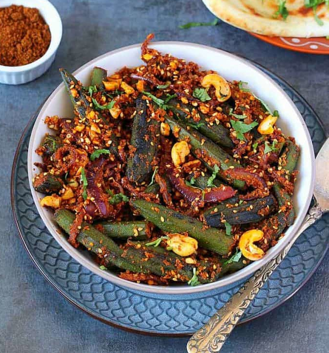

Bhindi Recipe

Description
Masala Bhindi, also known as spicy okra or ladyfinger,
is a popular Indian Dish made with sliced okra cooked with a blend of spices.
It is cooked until tender yet slightly crisp,
making it a delicious side dish that pairs well with roti.
Masala Bhindi offers a tasty way to enjoy okra with a hint of spice and aromatic flavours,
making it a staple in Indian cuisine.
Ingredients
- Sliced Okra
- Turmeric
- Red Chilli Powder
- Oil
- Coriander
- Cumin
- Roasted Peanut Powder
Skipping to the good part...
Steps to Prepare Masala Bhindi